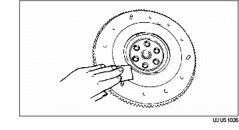
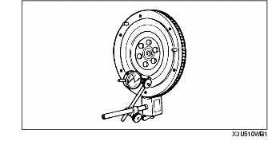

Flywheel inspection
1. Inspect the contact surface for scoring, cracks, and burning.

2. Remove minor scoring or burning using emery paper.
3. Inspect the ring gear teeth for wear and damage.
4. Install a dial indicator on the cylinder block.

5. Measure the flywheel runout using a dial indicator.
Flywheel maximum runout